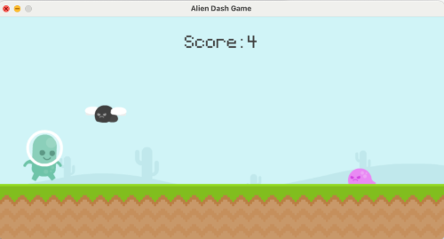
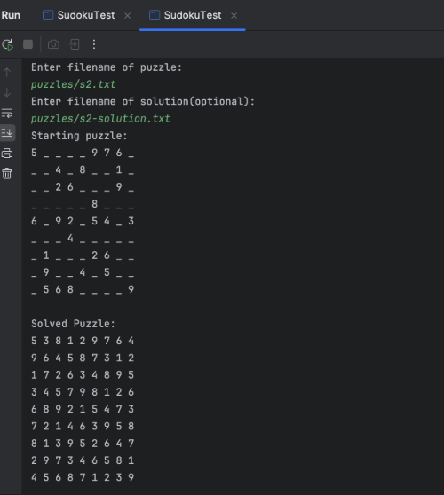

Profile
Add your resume summary/profile here. Add more paragraphs or links as needed.
Back to homepageProjects

Alien Dash Game | Python Project Link
- Implemented a 2D infinite runner game utilizing Pygame - a set of Python modules designed for writing video games
- Utilized control flow and logic to implement player gravity, random enemy generation, and animation

Sudoku Solver | Java
- Sudoku Solver that can solve any sudoku puzzle of any size grid
- Utilizes advanced recursive backtracking with an implementation of a stack data structure to more efficiently solve the puzzle without simply brute forcing the solution

Interlibrary Loan Web User Manual | HTML, CSS, JS
- Developing and maintaining an online user manual for the Bowdoin Interlibrary Loan that is simple to use and user friendly.
- Implements a simple navigation system and a search bar for easy access on how to complete any of the borrowing/lending jobs
Work Experience
Interlibrary Loan
Bowdoin College - Brunswick, ME
Jan 2024 --> Present
Lending, Document Delivery, and Web Development Assistant
- Responsible for the development and maintenance of the ILL Web User Manual website
- Ensuring that user-entered data adheres to a strict format to contribute to ILL database organization
- Evaluate, verify, and process user requests for books, articles, and documents from the Bowdoin Library
Habitat for Humanity
Manville, NJ
June 2022 --> August 2022
Volunteer Sales Floor General Assistant & Volunteer Cashier
- Collaborated with other volunteers to stock and organize donation items into respective departments
- Operated point of sale cash register and assisted in managing in-store orders
- Greeted and attended to customer needs regarding product locations, store policies, and promotions
Education
Bowdoin College - Brunswick, ME
Bachelor of Arts, Intended Major: Computer Science
GPA: 3.85/4.0
Relevant Coursework: Accelerated Intro to Computer Science, Data Structures, Foundations of Computer Systems
Watchung Hills Regional High School, Warren, New Jersey
GPA: 3.86/4.0
Activities: Computer Science Club, National Honor Society, Varsity Cross Country/Track, Orchestra
Awards: AP Scholar with Distinction, National Merit Commended Scholar, Dr. William J Pfeiffer Scholarship